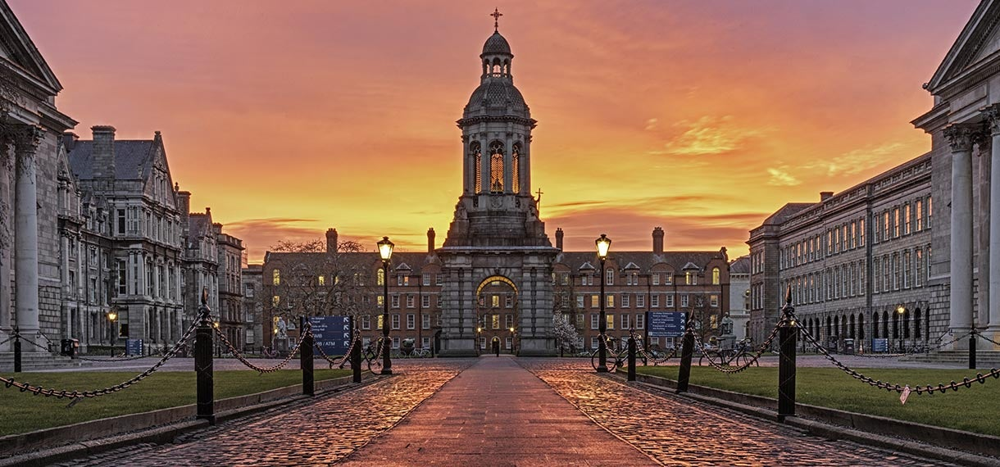

Welcome to My College
My College encourages innovation and an entrepreneurial spirit for student-led companies, and has been named as world’s leading college for producing venture backed entrepreneurs.
- High Rank Computer Programming
- Up to date courses
- Caring and Professional Staff
- Having Great Courses to Offer
Apply to My College
Ready to join to my college community? Apply today!
Academics
My College offers a broad range of programs to meet the significant demands of today’s interconnected, fast-paced world. These programs include not only undergraduate and graduate streams, but also certificate programs, as well as professional development programs. My College also offers cutting-edge research opportunities, internships, and co-op programs to students seeking practical experience. In addition, My College has embraced the realities of the post-Covid world, and now offers online courses and distance learning programs to make higher education even more accessible. No matter what route is chosen, students will be continually encouraged to develop critical thinking, communication, and leadership skills, which will propel them to success in their professional lives.
You are going to love My College!
- Informed by industry
- Hands-on, real-world experience
- Expert instructors
- Promoting entrepreneurship
- Applied research
- Flexible learning
- Accessible Campuses
- Students service and support
- International Student Services
- Indigenous Education
Campus life
My College certainly understands the importance of a diversified university experience. Over and above academics, My College has significant opportunities for personal growth, socialization, and exploration of interests that extend far beyond the classroom. Students will have access to state-of-the-art technology, facilities, and unique internships and career development opportunities, not to mention countless extracurricular activities and events related to their field of study.
Clubs and student organization are in abundance at My College. We cater to a broad range of interests and passions that can be explored through academic, cultural, service-oriented, and special interest clubs. Clubs are a great way to organize various events and activities such as cultural festivals, charity drives, workshops, and social events. The college also offers a variety of athletic programs. A vibrant and engaging campus is one of our top priorities at My College.
Admissions
My College is committed to creating a welcoming and inclusive environment for all students, one that cherishes and explores each student’s unique background. My College takes pride in its straightforward, intuitive admissions process, specifically designed to ensure that students can easily navigate the application process. In addition, My College is committed to maintaining diversity and inclusivity, recognizing that a diverse student body is essential to creating a rich, dynamic, and thorough learning experience. My College is committed to ensuring that students always feel welcome, supported, and empowered to achieve their dreams.